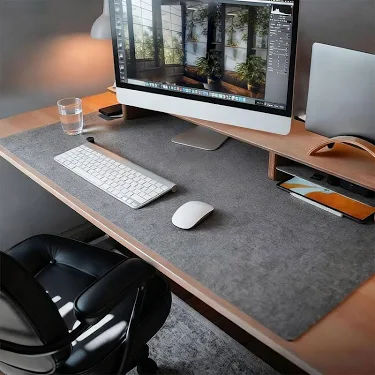
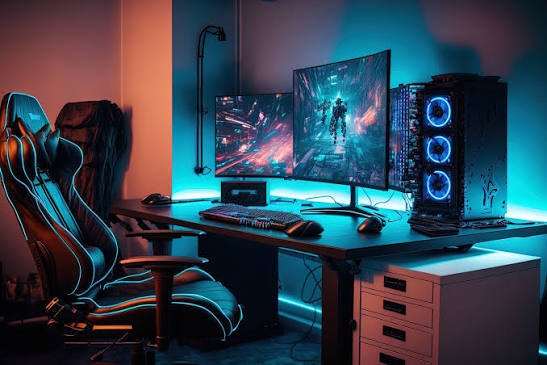

Esenciales para un Escritorio Minimalista

Alfombrilla de Escritorio de Fieltro (Desk Mat)
El núcleo de cualquier setup estético. Protege tu mesa, delimita tu espacio y amortigua el ruido.
Ver Precio en Amazon
Barra de Luz LED para Monitor
Ahorra espacio real en tu mesa. Ilumina directamente el teclado sin reflejos en la pantalla.
Ver Precio en Amazon
Soporte Vertical Doble para Portátil
Si trabajas con pantalla externa, este soporte de aluminio libera el 80% de tu escritorio.
Ver Precio en Amazon
Altavoces Estéreo Compactos
Diseño minimalista en madera o acabado mate que encaja bajo el monitor. Sonido nítido sin cables molestos.
Ver Precio en Amazon
Soporte de Auriculares
Mantén tus cascos recogidos con elegancia. Base antideslizante y cuerpo curvado que no deforma la diadema.
Ver Precio en Amazon
Estación de Carga Inalámbrica 3 en 1
Carga tu móvil, reloj y auriculares en un solo sitio. Elimina tres cables de tu mesa con un único soporte magnético.
Ver Precio en Amazon
Planta Artificial con Maceta Nórdica
El toque verde que todo setup estético necesita. No requiere mantenimiento y rompe la monotonía tecnológica.
Ver Precio en Amazon
Caja de Gestión de Cables Oculta
Esconde la regleta y los cargadores feos dentro de esta caja con tapa de bambú. Limpieza visual instantánea debajo del escritorio.
Ver Precio en Amazon